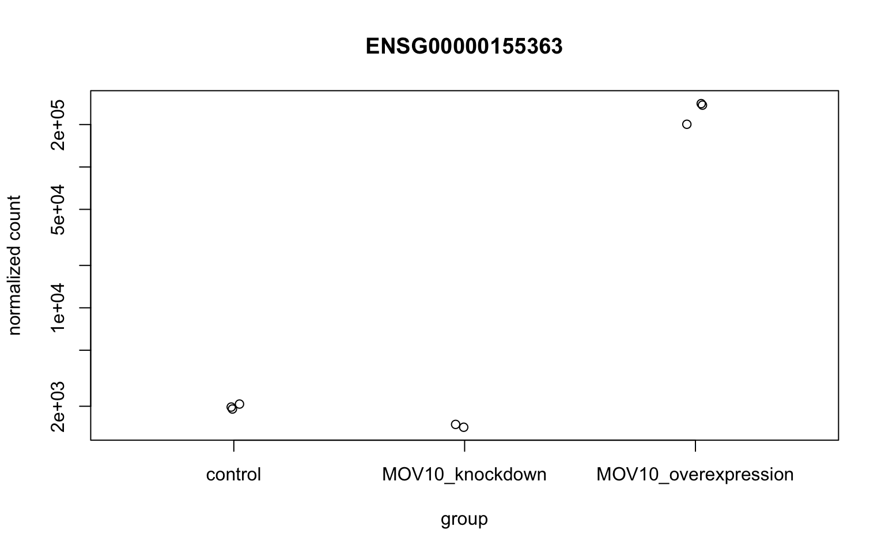
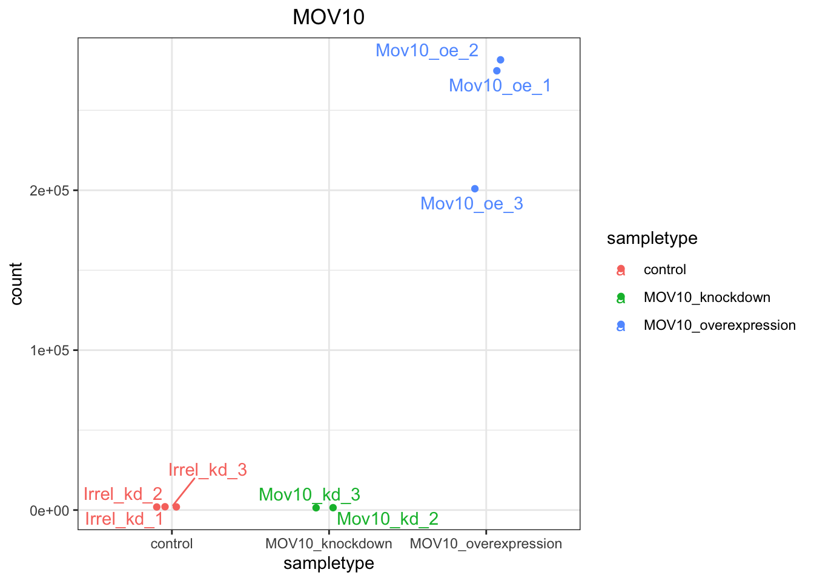
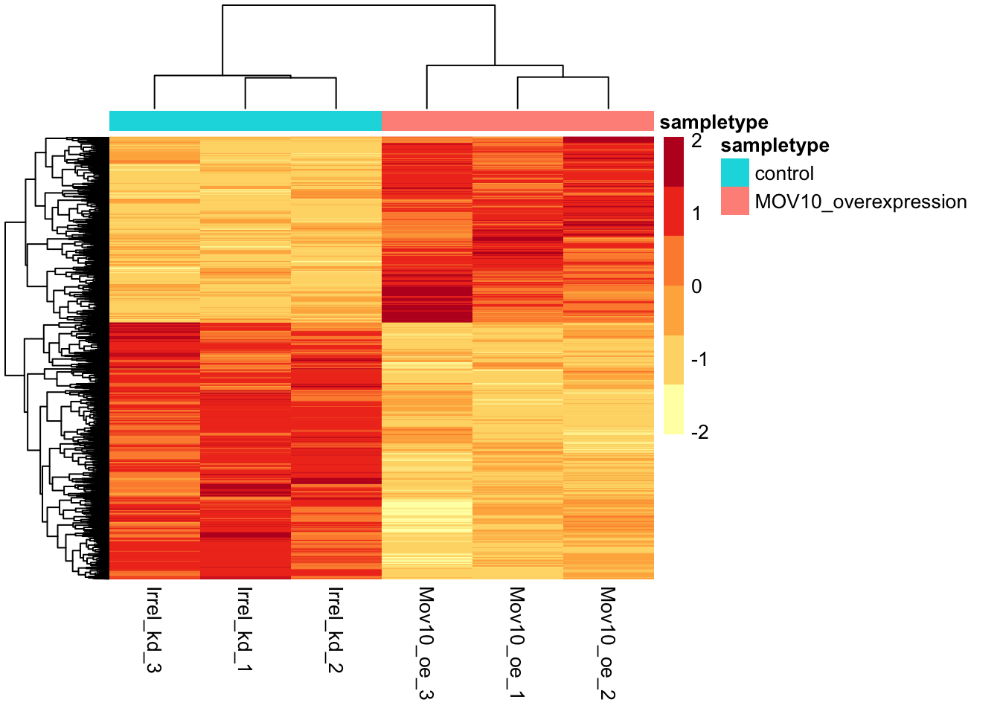
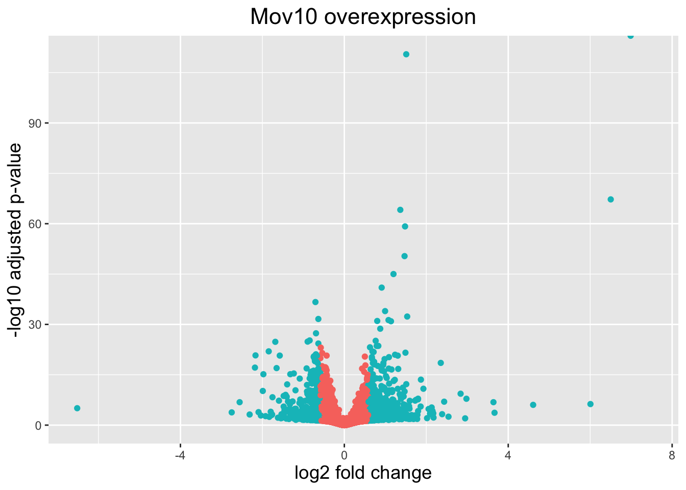
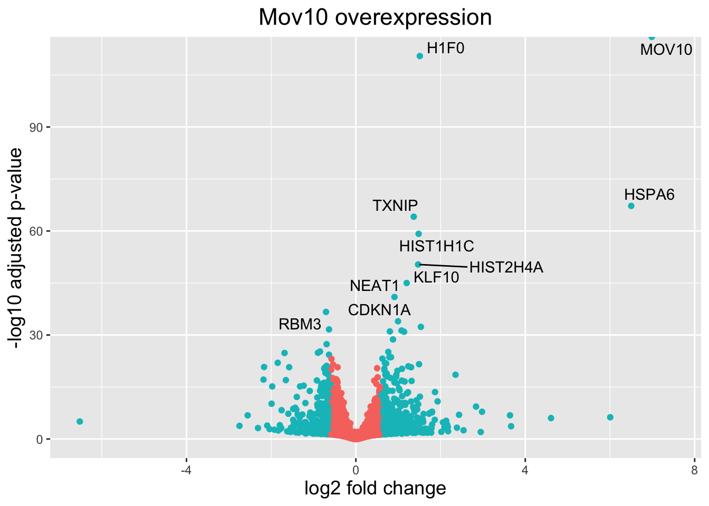

# Make metadata tibble
mov10_meta <- meta %>%
rownames_to_column(var="samplename") %>%
as_tibble()Advanced visualizations
Approximate time: 75 minutes
Learning Objectives
- Setup results data for application of visualization techniques
- Describe different data visualization useful for exploring results from a DGE analysis
- Create a volcano plot to evaluate relationship amongst DGE statistics
- Create a heatmap to illustrate expression changes of differentially expressed genes
Visualizing the results
When we are working with large amounts of data, it can be useful to display that information graphically to gain more insight. During this lesson, we will get you started with some basic and more advanced plots commonly used when exploring differential gene expression data. Many of these plots can be helpful in visualizing other types of data as well.
We will be working with three different data objects we have already created in earlier lessons:
- Metadata for our samples (a dataframe):
meta - Normalized expression data for every gene in each of our samples (a matrix):
normalized_counts - Tibble versions of the DESeq2 results we generated in the last lesson:
res_tableOE_tbandres_tableKD_tb
First, let’s create a metadata tibble from the data frame (don’t lose the row names!)
Next, let’s bring in a column with gene symbols to the normalized_counts object, so we can use them to label our plots. Ensembl IDs are great for many things, but the gene symbols are much more recognizable to us, as biologists.
# DESeq2 creates a matrix when you use the counts() function
# First convert normalized_counts to a data frame and transfer the row names to a new column called "gene"
normalized_counts <- counts(dds, normalized=TRUE) %>%
data.frame() %>%
rownames_to_column(var="gene")
# Next, merge together (ensembl IDs) the normalized counts data frame
# with a subset of the annotations in the tx2gene data frame (only the columns for ensembl gene IDs and gene symbols)
grch38annot <- tx2gene %>%
dplyr::select(ensgene, symbol) %>%
dplyr::distinct()
# This will bring in a column of gene symbols
normalized_counts <- merge(normalized_counts, grch38annot, by.x="gene", by.y="ensgene")
# Now create a tibble for the normalized counts
normalized_counts <- normalized_counts %>%
as_tibble()
# View at the tibble to make sure it looks correct
normalized_counts %>% head()# A tibble: 6 × 10
gene Irrel_kd_1 Irrel_kd_2 Irrel_kd_3 Mov10_kd_2 Mov10_kd_3 Mov10_oe_1
<chr> <dbl> <dbl> <dbl> <dbl> <dbl> <dbl>
1 ENSG0000000… 3925. 3794. 3961. 3952. 3941. 2727.
2 ENSG0000000… 24.2 30.2 30.7 23.7 13.9 20.4
3 ENSG0000000… 1326. 1341. 1180. 1515. 1432. 1542.
4 ENSG0000000… 456. 422. 476. 597. 610. 527.
5 ENSG0000000… 1250. 1212. 1134. 1389. 1300. 965.
6 ENSG0000000… 0.897 1.04 0 1.28 0 0
# ℹ 3 more variables: Mov10_oe_2 <dbl>, Mov10_oe_3 <dbl>, symbol <chr>
A possible alternative to the above:
normalized_counts <- counts(dds, normalized=TRUE) %>%
data.frame() %>%
rownames_to_column(var="gene") %>%
as_tibble() %>%
left_join(grch38annot, by=c("gene" = "ensgene"))Plotting signicant DE genes
One way to visualize results would be to simply plot the expression data for a handful of genes. We could do that by picking out specific genes of interest or selecting a range of genes.
Using DESeq2 plotCounts() to plot expression of a single gene
To pick out a specific gene of interest to plot, for example MOV10, we can use the plotCounts() from DESeq2. plotCounts() requires that the gene specified matches the original input to DESeq2, which in our case was Ensembl IDs.
# Find the Ensembl ID of MOV10
grch38annot[grch38annot$symbol == "MOV10", "ensgene"][1] "ENSG00000155363"# Plot expression for single gene
plotCounts(dds, gene="ENSG00000155363", intgroup="sampletype") 
Note
This DESeq2 function only allows for plotting the counts of a single gene at a time, and is not flexible regarding the appearance.
Using ggplot2 to plot expression of a single gene
If you wish to change the appearance of this plot, we can save the output of plotCounts() to a variable specifying the returnData=TRUE argument, then use ggplot():
# Save plotcounts to a data frame object
d <- plotCounts(dds, gene="ENSG00000155363", intgroup="sampletype", returnData=TRUE)
# What is the data output of plotCounts()?
d %>% head() count sampletype
Irrel_kd_1 1911.647 control
Irrel_kd_2 1974.191 control
Irrel_kd_3 2072.948 control
Mov10_kd_2 1419.191 MOV10_knockdown
Mov10_kd_3 1486.757 MOV10_knockdown
Mov10_oe_1 274747.523 MOV10_overexpression# Plot the MOV10 normalized counts, using the samplenames (rownames(d)) as labels
ggplot(d, aes(x = sampletype, y = count, color = sampletype)) +
# Scatterplot but allow points to "jitter" so they are not on top of each other
geom_point(position=position_jitter(w = 0.1,h = 0)) +
# Label points
geom_text_repel(aes(label = rownames(d))) +
# Add title and plot tweaks
ggtitle("MOV10") +
theme_bw() +
theme(plot.title = element_text(hjust = 0.5))
Label points
Note that in the plot above, we are using geom_text_repel() from the ggrepel package to label our individual points on the plot.
Plot more than one gene
If you are interested in plotting the expression of multiple genes all together, please refer to the short lesson linked here where we demo this for the top 20 most significantly expressed genes.
Heatmap
In addition to plotting subsets, we could also extract the normalized values of all the significant genes and plot a heatmap of their expression using pheatmap().
# Extract normalized expression for significant genes from the OE and control samples (2:4 and 7:9)
norm_OEsig <- normalized_counts[,c(1:4,7:9)] %>%
dplyr::filter(gene %in% sigOE$gene) Now let’s draw the heatmap using pheatmap:
# Set a color palette
heat_colors <- RColorBrewer::brewer.pal(6, "YlOrRd")
# Run pheatmap using the metadata dataframe for the annotation
pheatmap(norm_OEsig[2:7],
color = heat_colors,
cluster_rows = TRUE,
show_rownames = FALSE,
annotation = meta,
border_color = NA,
fontsize = 10,
scale = "row",
fontsize_row = 10,
height = 20)
Note
There are several additional arguments we have included in the function for aesthetics. One important one is scale="row", in which Z-scores are plotted, rather than the actual normalized count value.
Z-scores are computed on a gene-by-gene basis by subtracting the mean and then dividing by the standard deviation. The Z-scores are computed after the clustering, so that it only affects the graphical aesthetics, and the color visualization is improved.
Volcano plot
The above plot would be great to look at the expression levels of a good number of genes, but for more of a global view there are other plots we can draw. A commonly used one is a volcano plot; in which you have the log-transformed adjusted p-values plotted on the y-axis and log2 fold change values on the x-axis.
To generate a volcano plot, we first need to have a column in our results data indicating whether or not the gene is considered differentially expressed based on p-adjusted values and, for the purposes of this visualization, a log2fold change cutoff.
# Obtain logical vector where TRUE values denote padj values < 0.05 and fold change > 1.5 in either direction
res_tableOE_tb <- res_tableOE_tb %>%
dplyr::mutate(threshold_OE = padj < 0.05 & abs(log2FoldChange) >= log2(1.5))Now we can start plotting. The geom_point object is most applicable, as this is essentially a scatter plot:
# Volcano plot
ggplot(res_tableOE_tb) +
geom_point(aes(x = log2FoldChange, y = -log10(padj),
# Color by whether or not gene is DE by padj and log2FC
colour = threshold_OE)) +
# You could choose to limit the y-axis to look at the shape of the data without outliers
# scale_y_continuous(limits = c(0,50)) +
# Add title and plot tweaks
ggtitle("Mov10 overexpression") +
xlab("log2 fold change") +
ylab("-log10 adjusted p-value") +
theme(legend.position = "none",
plot.title = element_text(size = rel(1.5), hjust = 0.5),
axis.title = element_text(size = rel(1.25))) 
This is a great way to get an overall picture of what is going on, but what if we also wanted to know where the top 10 genes (lowest padj) in our DE list are located on this plot? We could label those dots with the gene name on the volcano plot using geom_text_repel().
First, we need to order the res_tableOE tibble by padj, and add an additional column to it, to include on those gene names we want to use to label the plot.
# Add all the gene symbols as a column from the grch38 table using bind_cols()
res_tableOE_tb <- bind_cols(res_tableOE_tb,
symbol = grch38annot$symbol[match(res_tableOE_tb$gene, grch38annot$ensgene)])
# Create an empty column to indicate which genes to label
res_tableOE_tb <- res_tableOE_tb %>% dplyr::mutate(genelabels = "")
# Sort by padj values
res_tableOE_tb <- res_tableOE_tb %>% dplyr::arrange(padj)
# Populate the genelabels column with contents of the gene symbols column for the first 10 rows, i.e., the top 10 most significantly expressed genes
res_tableOE_tb$genelabels[1:10] <- as.character(res_tableOE_tb$symbol[1:10])
# Look at the new table
head(res_tableOE_tb)# A tibble: 6 × 9
gene baseMean log2FoldChange lfcSE pvalue padj threshold_OE symbol
<chr> <dbl> <dbl> <dbl> <dbl> <dbl> <lgl> <chr>
1 ENSG00… 95772. 6.99 0.122 0 0 TRUE MOV10
2 ENSG00… 8090. 1.51 0.0666 3.72e-115 3.41e-111 TRUE H1F0
3 ENSG00… 239. 6.50 0.363 9.45e- 72 5.76e- 68 TRUE HSPA6
4 ENSG00… 5285. 1.37 0.0788 1.64e- 68 7.48e- 65 TRUE TXNIP
5 ENSG00… 1747. 1.48 0.0890 1.75e- 63 6.41e- 60 TRUE HIST1…
6 ENSG00… 2595. 1.47 0.0956 1.49e- 54 4.54e- 51 TRUE HIST2…
# ℹ 1 more variable: genelabels <chr>Next, we plot it as before with an additional layer for geom_text_repel() wherein we can specify the column of gene labels we just created.
# Volcano plot with labels on some points
ggplot(res_tableOE_tb, aes(x = log2FoldChange, y = -log10(padj))) +
# Color by whether or not gene is DE by padj and log2FC
geom_point(aes(colour = threshold_OE)) +
# Only label the top 10 DEG we identified above
geom_text_repel(aes(label = genelabels)) +
# Add title and plot tweaks
ggtitle("Mov10 overexpression") +
xlab("log2 fold change") +
ylab("-log10 adjusted p-value") +
theme(legend.position = "none",
plot.title = element_text(size = rel(1.5), hjust = 0.5),
axis.title = element_text(size = rel(1.25))) 
An R package for visualization of DGE results
The Bioconductor package DEGreport can use the DESeq2 results output to make the top 20 genes and the volcano plots generated above by writing much fewer lines of code. The caveat of these functions is you lose the ability to customize plots as we have demonstrated above.
If you are interested, the example code below shows how you can use DEGreport to create similar plots. Note that this is example code, do not run.
## DO NOT RUN THIS CODE
# Plot normalized expression of top n (20) genes
DEGreport::degPlot(dds = dds, # dds object is output from DESeq2
res = res, n = 20, xs = "type", group = "condition")
# Plot labeled volcano plot
DEGreport::degVolcano(
data.frame(res[,c("log2FoldChange","padj")]), # table - 2 columns
plot_text = data.frame(res[1:10,c("log2FoldChange","padj","id")])) # table to add names
# Available in the newer version for R 3.4
DEGreport::degPlotWide(dds = dds, genes = row.names(res)[1:5], group = "condition")Materials and hands-on activities were adapted from RNA-seq workflow on the Bioconductor website